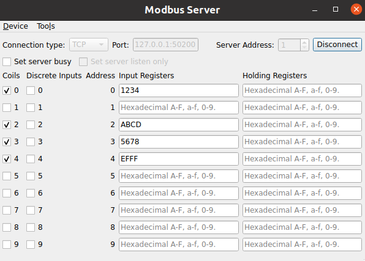

Modbus Server
The example implements a Modbus server application.
The example acts as Modbus server. It receives standard Modbus requests, adjusts its internal states based on the request and responds with the appropriate reply.
This example must be used in conjunction with the Modbus Client example. This example should be started and put into the listen state before the Modbus client example is started. Subsequent interactions between the two examples use the Modbus protocol.
Key classes used in this example:

Creating a QModbusServer
An instance of QModbusServer is required to perform any communication. Depending on the specified connection type, the example can instantiate a QModbusRtuSerialServer (for serial communication) or a QModbusTcpServer (for TCP-based communication).
auto type = static_cast<ModbusConnection>(index);
if (type == Serial) {
#if QT_CONFIG(modbus_serialport)
modbusDevice = new QModbusRtuSerialServer(this);
// Try to fill in the first available serial port name if the line edit
// is empty, or contains a url (assume that ':' is only a part of url).
const auto ports = QSerialPortInfo::availablePorts();
const auto currentText = ui->portEdit->text();
if (!ports.isEmpty() && (currentText.isEmpty() || currentText.contains(u':')))
ui->portEdit->setText(ports.front().portName());
#endif
} else if (type == Tcp) {
modbusDevice = new QModbusTcpServer(this);
const QUrl currentUrl = QUrl::fromUserInput(ui->portEdit->text());
// Check if we already have <ip address>:<port>
if (currentUrl.port() <= 0)
ui->portEdit->setText(QLatin1String("127.0.0.1:50200"));
}
Once the server is created, the register map is set using QModbusServer::setMap() method. This register map is used by client applications to read and write server data.
QModbusDataUnitMap reg;
reg.insert(QModbusDataUnit::Coils, { QModbusDataUnit::Coils, 0, 10 });
reg.insert(QModbusDataUnit::DiscreteInputs, { QModbusDataUnit::DiscreteInputs, 0, 10 });
reg.insert(QModbusDataUnit::InputRegisters, { QModbusDataUnit::InputRegisters, 0, 10 });
reg.insert(QModbusDataUnit::HoldingRegisters, { QModbusDataUnit::HoldingRegisters, 0, 10 });
modbusDevice->setMap(reg);
After that the communication parameters and the server address are specified. The communication parameters depend on the communication type:
if (static_cast<ModbusConnection>(ui->connectType->currentIndex()) == Serial) {
modbusDevice->setConnectionParameter(QModbusDevice::SerialPortNameParameter,
ui->portEdit->text());
#if QT_CONFIG(modbus_serialport)
modbusDevice->setConnectionParameter(QModbusDevice::SerialParityParameter,
m_settingsDialog->settings().parity);
modbusDevice->setConnectionParameter(QModbusDevice::SerialBaudRateParameter,
m_settingsDialog->settings().baud);
modbusDevice->setConnectionParameter(QModbusDevice::SerialDataBitsParameter,
m_settingsDialog->settings().dataBits);
modbusDevice->setConnectionParameter(QModbusDevice::SerialStopBitsParameter,
m_settingsDialog->settings().stopBits);
#endif
} else {
const QUrl url = QUrl::fromUserInput(ui->portEdit->text());
modbusDevice->setConnectionParameter(QModbusDevice::NetworkPortParameter, url.port());
modbusDevice->setConnectionParameter(QModbusDevice::NetworkAddressParameter, url.host());
}
modbusDevice->setServerAddress(ui->serverEdit->text().toInt());
After the server is created and all the parameters are specified, use QModbusServer::connectDevice() to connect to Modbus network.
Changing Local Values
The example allows to change values of all supported register types by using the provided combo boxes or line edits. Once the value is updated in the UI, the QModbusServer::setData() method is used to update the actual value on the server:
void MainWindow::bitChanged(int id, QModbusDataUnit::RegisterType table, bool value) { if (!modbusDevice) return; if (!modbusDevice->setData(table, quint16(id), value)) statusBar()->showMessage(tr("Could not set data: ") + modbusDevice->errorString(), 5000); } void MainWindow::setRegister(const QString &value) { if (!modbusDevice) return; const QString objectName = QObject::sender()->objectName(); if (registers.contains(objectName)) { bool ok = true; const quint16 id = quint16(QObject::sender()->property("ID").toUInt()); if (objectName.startsWith(QStringLiteral("inReg"))) { const auto uval = value.toUShort(&ok, 16); if (ok) ok = modbusDevice->setData(QModbusDataUnit::InputRegisters, id, uval); } else if (objectName.startsWith(QStringLiteral("holdReg"))) { const auto uval = value.toUShort(&ok, 16); if (ok) ok = modbusDevice->setData(QModbusDataUnit::HoldingRegisters, id, uval); } if (!ok) statusBar()->showMessage(tr("Could not set register: ") + modbusDevice->errorString(), 5000); } }
Handling Remote Writes
The Modbus clients are capable of updating Coils and HoldingRegisters by sending write requests. Once the value is updated on the server side using such request, a QModbusServer::dataWritten() signal is emitted.
connect(modbusDevice, &QModbusServer::dataWritten,
this, &MainWindow::updateWidgets);
The Modbus server example connects to this signal, extracts the updated values and updates the UI accordingly:
void MainWindow::updateWidgets(QModbusDataUnit::RegisterType table, int address, int size) { for (int i = 0; i < size; ++i) { quint16 value; QString text; switch (table) { case QModbusDataUnit::Coils: modbusDevice->data(QModbusDataUnit::Coils, quint16(address + i), &value); coilButtons.button(address + i)->setChecked(value); break; case QModbusDataUnit::HoldingRegisters: modbusDevice->data(QModbusDataUnit::HoldingRegisters, quint16(address + i), &value); registers.value(QStringLiteral("holdReg_%1").arg(address + i))->setText(text .setNum(value, 16)); break; default: break; } } }
Running the Example
To run the example from Qt Creator, open the Welcome mode and select the example from Examples. For more information, visit Building and Running an Example.